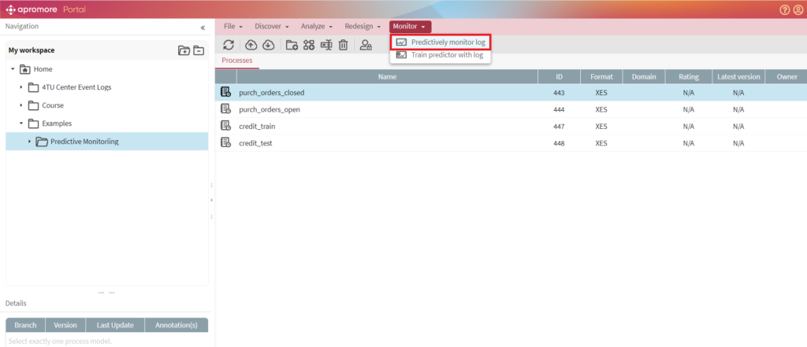
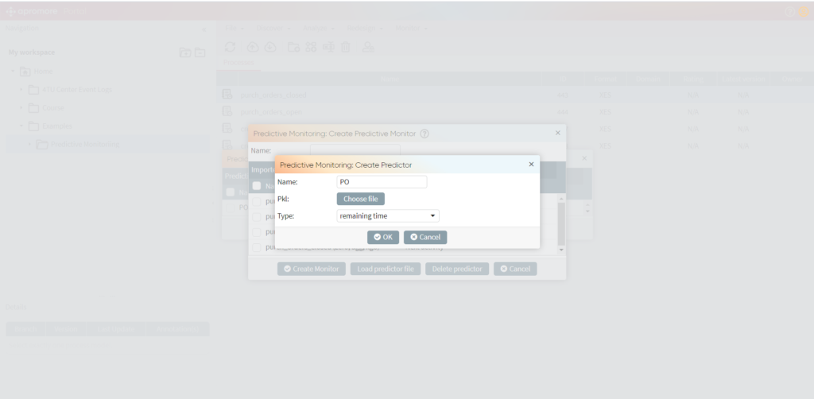
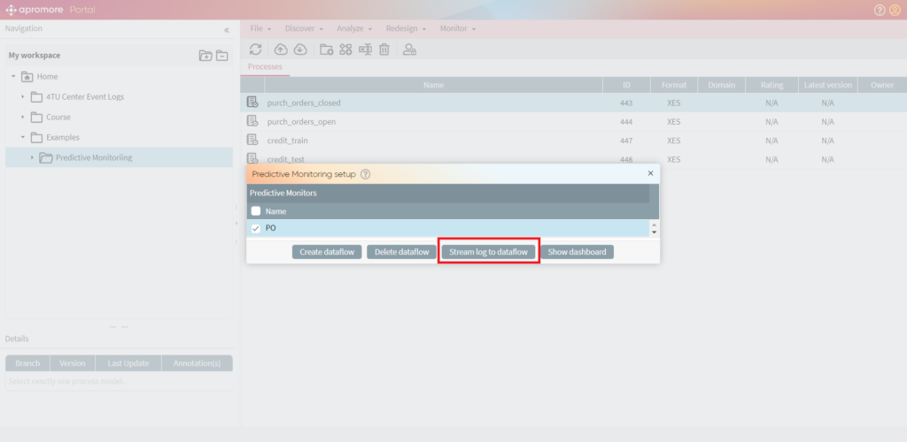
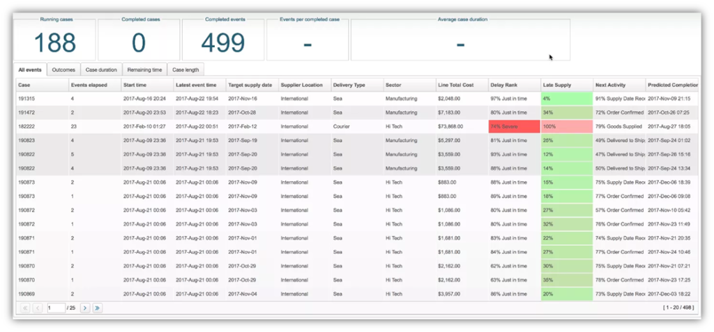
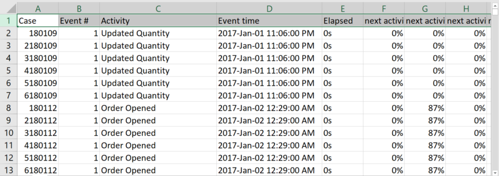

Öffnen Sie das Vorhersage-Dashboard
Bemerkung
Die Predictive-Monitoring-Plugins von Apromore sind als Add-Ons für verfügbar Apromore Enterprise Edition.
Sobald die Vorhersagemodelle trainiert wurden, können sie für die bereitgestellt werden Runtime Predictive Monitoring Umgebung von Apromore, zu machen prognosen zu laufenden Fällen. Dazu kann das Runtime-Plugin-Bundle verwendet werden streamen Sie ein Ereignisprotokoll aus dem Repository oder hängen Sie sich in einen externen Stream ein. In beiden Fällen wird der Eingabestrom in einen Strom von Vorhersagen umgewandelt die in einem webbasierten Dashboard visualisiert wird.
Um das Plugin zu verwenden, wählen Sie ein Ereignisprotokoll aus dem Repository aus und klicken Sie auf Überwachen -> Protokoll vorausschauend überwachen. Zu Demonstrationszwecken, Das Apromore-Repository bietet mehrere vorverarbeitete Protokolle unter Ordner Beispiele/Predictive Monitoring. Diese Protokolle können auch heruntergeladen werden von hier

Erstellen Sie einen neuen Predictive Monitor.

Wählen Sie den erstellten Monitor aus und klicken Sie auf Stream log to dataflow.

Klicken Sie auf Dashboard anzeigen, um mit dem Streamen von Ereignissen aus dem Protokoll zu beginnen. EIN dashboard wird angezeigt und mit laufenden Fällen gefüllt:

Das Dashboard bietet eine Liste der derzeit laufenden sowie abgeschlossenen Fälle. Für jeden Fall ist es auch möglich, eine Reihe von Zusammenfassungen zu visualisieren Statistiken, einschließlich der Anzahl der Ereignisse im Fall, seiner Startzeit und den Zeitpunkt, zu dem das letzte Ereignis in dem Fall eingetreten ist. Für die In laufenden Fällen liefert das Runtime-Plug-in-Bundle die vorhergesagten Werte von die Leistungsindikatoren, die der Benutzer vorhersagen möchte. Für abgeschlossen Fällen zeigt es stattdessen die tatsächlichen Werte der Indikatoren. Farbe-Codierung wird angewendet, um Benutzern dabei zu helfen, potenzielle Probleme schnell einzugrenzen Fälle.
Leistungsvorhersagen in CSV exportieren
Neben dem Dashboard zur kontinuierlichen Prozessüberwachung in Echtzeit, Das Runtime-Plug-in unterstützt einen Anwendungsfall für reguläre Berichte, in dem Benutzer dies können Erhalten Sie regelmäßig Berichte im CSV-Format mit dem aktuellen Satz von Vorhersagen. Diese Berichte können problemlos in gemeinsame Daten importiert werden Analyseplattformen (z. B. Microsoft Excel, Tableau, QlikView, R) für weitere Erforschung und Visualisierung.

Einen Screencast dieses Plugins finden Sie hier .